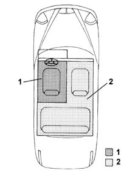

Specifications
- Path
- Descriptions > 50 auxiliary units > Specifications
- Kind
- system description
- Applies to
- all engines; all production periods
- Interactive page
- https://sloeber94.github.io/elrnDB-lThss/en/#/162339
Applies to: all engines; all production periods
The automatic climate control system fitted on this vehicle is the dual zone type, in other words the temperature inside the passenger compartment is managed in two zones: the driver's zone (1) and the (front and rear) passenger zone (2), in other words the system allows the occupants in each of these zones to set different temperature values. The flow rate, on the other hand, is the same in the two zones.

- 1. Driver's zone
- 2. Passenger zone
The control of the temperature is based on the "thermal balance" principle, i.e. the climate control system develops sufficient thermal power to keep the inside temperature set by the user constant and compensate for the thermal energy which the vehicle exchanges with the outside depending on the climate conditions (including radiation).
This automatic climate control system has a function that allows the occupants in the front of the vehicle (driver and passenger) to request the intake of "diffused" air into the passenger compartment. In this configuration the climate control system operates using three additional vents, located in the dashboard, and makes it possible to employ a different internal temperature maintenance strategy which has the following advantages:
- increased thermal exchange surface with the ambient inside the vehicle.
- Less impact speed between the air and the passengers.
- Less air flow noise.